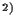
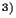
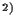
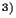
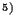
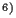
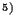
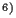

Hans-Georg Beyer , Eva
Brucherseifer, Wilfried Jakob,
, Eva
Brucherseifer, Wilfried Jakob,
Hartmut Pohlheim , Bernhard Sendhoff, and Thanh Binh To
, Bernhard Sendhoff, and Thanh Binh To
 Universität Dortmund,
Informatik XI (Systemanalyse), D-44221 Dortmund
Universität Dortmund,
Informatik XI (Systemanalyse), D-44221 Dortmund
TU Darmstadt, Fachgebiet für Regelungstheorie und
Robotik, Landgraf-Georg-Str. 5, D-64283 Darmstadt
Forschungszentrum Karlsruhe, Institut für Angewandte
Informatik, Postfach 3640, D-76021 Karlsruhe
 DaimlerChrysler AG, Forschung und Technologie, Alt-Moabit
96a, D-10559 Berlin
DaimlerChrysler AG, Forschung und Technologie, Alt-Moabit
96a, D-10559 Berlin
Honda R&D Europe GmbH, Future Technology Research
Division, Carl-Legien-Str. 30, D-63073 Offenbach/Main
Institut für Automation und Kommunikation e.V.
Magdeburg, Steinfeldstr. 3, D-39179 Magdeburg